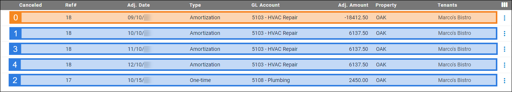
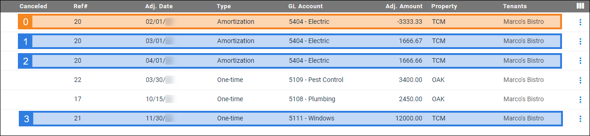

Source: https://rmxhelp.rentmanager.com/Topics/Express/KB/Script-Index-CAM-Expense-Adjustments.htm
CAM Expense Adjustment Indexing
In scripting, an index is how instances of an entity or other record are counted in a script. Indexing manages the one-to-many relationship that occurs between two classes.
The CAMExpenseAdjustment class is used as a child class in a script (e.g., [Tenant().Lease().CAMExpenseAdjustment().Function]), and an index can be specified to uniquely identify the common area maintenance (CAM) expense adjustments that are associated with the preceding class. For example, tenants may have multiple adjustments associated with their lease, and indexing can be used to identify each of those adjustments.
CAM Expense Adjustment Index Relationships
With CAMExpenseAdjustment scripts, the indexing results vary depending on the index of the preceding Lease class. Additionally, amortization-type expense adjustments share a reference number, but each period in the amortized adjustment has its own index.
Single-Lease Adjustment Indexing
CAM expense adjustments are attached to specific leases for a tenant, starting with the individual adjustment with the earliest date.

[Tenant().Lease().CAMExpenseAdjustment(2).GLAccount()]
Using the information in the above image, this returns 5108 Plumbing because adjustment number 17 is the CAM expense adjustment with the second-earliest date for tenant Marco's Bistro's lease at White Oak Shopping Center (OAK).
Multiple-Lease Indexing
When it comes to tenants who have CAM expense adjustments applied to multiple leases, you first apply the index to the preceding Lease class. Then the index you apply to the CAMExpenseAdjustment class examines only the expense adjustments associated with that lease.
More Information
Lease indexes are determined by the order in which the tenant's leases are listed on their account's details page on the Leases tile. For example, the first lease in the list is index 0, the second lease listed is index 1, and so on. For more information, refer to Lease Indexing.

[Tenant().Lease(1).CAMExpenseAdjustment(2).AdjustmentAmount()]
Using the information in the above image, this returns 1666.66 because the third period of adjustment number 20 is the CAM expense adjustment with the third-earliest date for tenant Marco's Bistro's third-listed lease, which is associated with property Tri County Mall (TCM).